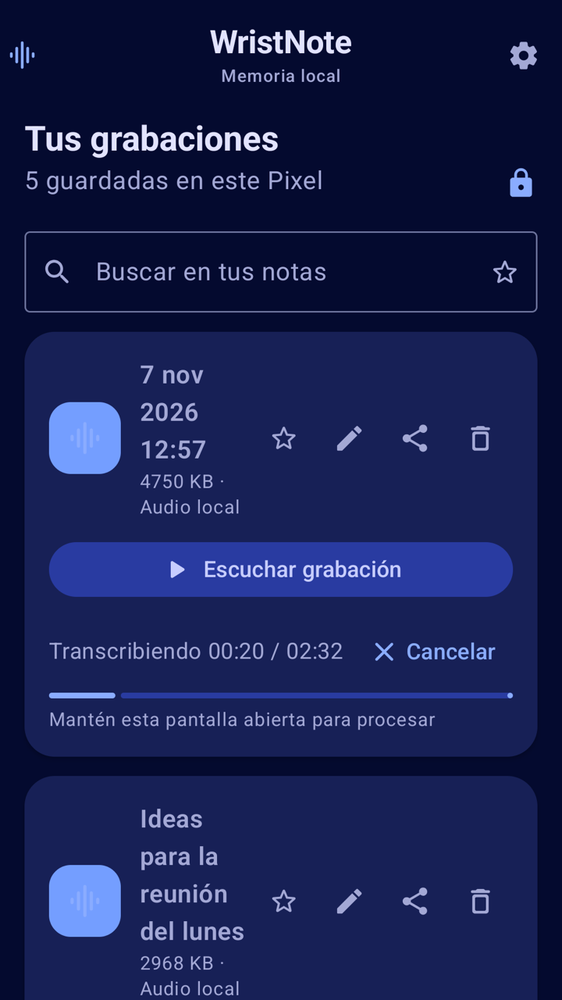
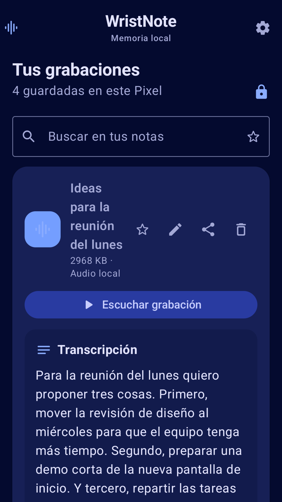
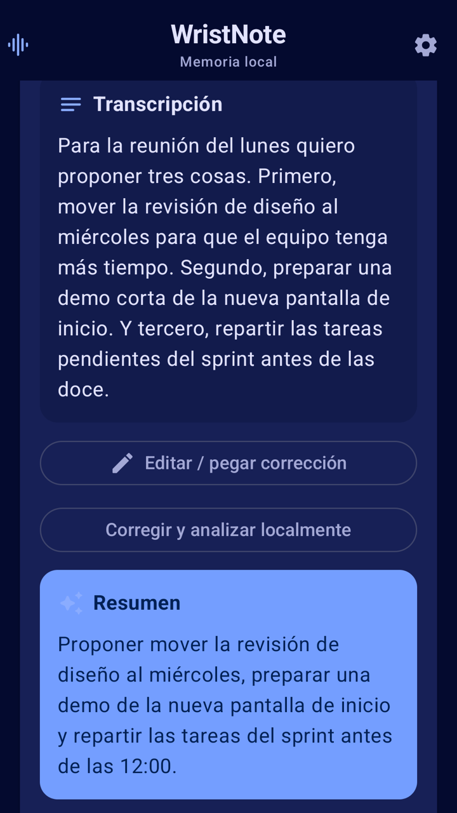
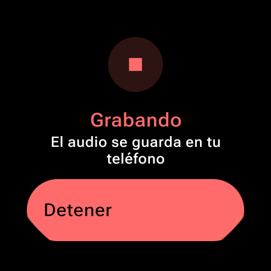
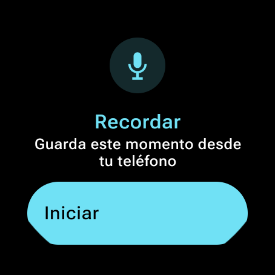
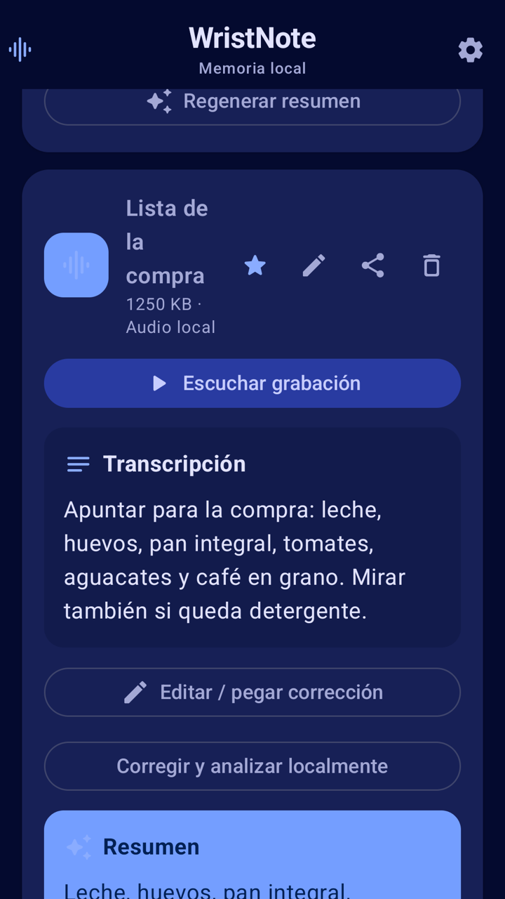
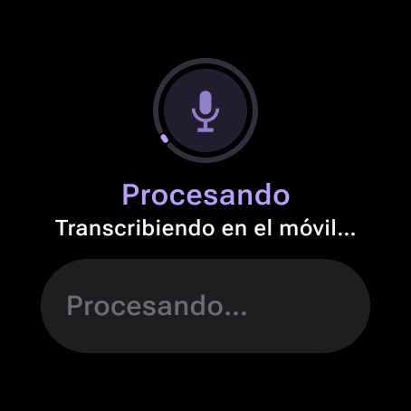
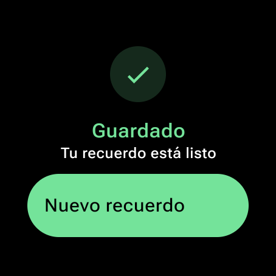

Toca tu reloj.
Tu móvil toma la nota.
WristNote convierte tu reloj Wear OS en un botón de grabar: abre WristNote desde la complicación de tu esfera, pulsa Iniciar y tu móvil graba con su micrófono. ¿Sin reloj? Lánzalo desde los Ajustes rápidos del móvil. Al terminar, la nota se transcribe en el propio teléfono. El audio y el texto no salen de tu dispositivo.




Desde la muñeca
Empieza y detén desde el reloj, con vibración de confirmación.
Micrófono del móvil
Mejor audio que el del reloj, hasta 5 minutos por nota.
IA en el dispositivo
Transcripción y resúmenes en tu teléfono, no en la nube.
Privada por diseño
Sin cuentas, sin servidores propios, sin anuncios. Tus notas se quedan en tu móvil.
De la muñeca al texto en segundos
Tocas el reloj, tu móvil graba y la nota queda transcrita y resumida en el propio teléfono.
Apunta la idea antes de que se escape
Tienes las manos ocupadas, el móvil en el bolsillo y la idea no espera. WristNote la guarda con un toque y la convierte en texto que puedes buscar.
Graba desde el reloj
Toca la complicación de WristNote en tu esfera y pulsa Iniciar: el micrófono del móvil empieza a grabar, aunque esté bloqueado en el bolsillo. El mismo botón lo detiene, y el reloj vibra y muestra cada paso.

Icono de Ajustes rápidos
No necesitas reloj: desliza hacia abajo en el móvil y toca Grabar nota, incluso con la pantalla bloqueada.
Transcrita en el teléfono
El reconocimiento de voz integrado de Android (AICore) convierte tu voz en texto en local, con barra de progreso y opción de cancelar.
Tus notas, organizadas
Busca por texto, marca favoritas y ponles título. Escucha cada grabación con controles de avance y retroceso, corrige nombres en la transcripción y comparte el audio, el texto o el resumen con la app que quieras. También puedes importar audios que ya tengas.

IA local opcional con Gemma
Si lo activas e importas un modelo Gemma compatible, WristNote va más allá con cada nota, todo procesado en tu teléfono.
- Correcciones propuestas a la transcripción
- Resumen breve de cada nota
- Datos estructurados: tareas, fechas, personas
- Se ejecuta en el dispositivo TPU · GPU · CPU
El reloj es el botón, el móvil hace el trabajo
El reloj nunca graba audio: inicia y detiene la grabación en tu móvil emparejado y muestra su estado, así aprovechas el mejor micrófono y la batería del teléfono.
Pulsa Iniciar
Abre WristNote desde la complicación de tu esfera. También puedes usar Ajustes rápidos o el botón de la app.
El móvil graba
Mientras graba se ve una notificación con el botón Detener. Se para sola a los 5 minutos.

Detén desde donde quieras
Desde el reloj, la notificación, Ajustes rápidos o la app. El reloj vibra para confirmarlo.

Lee tu nota
La nota se transcribe y resume en el teléfono, lista para buscar, editar o compartir.
Prueba WristNote antes que nadie
WristNote está en prueba cerrada en Google Play. Usa la misma cuenta de Google en los tres pasos: la de tu móvil.
Únete al grupo de testers
Unirte al grupo de Google es obligatorio: es lo que da acceso a la prueba a tu cuenta.
Apúntate a la prueba
Abre la página de inscripción y acepta la invitación. Puede tardar unos minutos después de unirte al grupo.
Instala la app
Instala WristNote en tu móvil y añade su icono a Ajustes rápidos. Si tienes reloj Wear OS, instálala también en él y añade la complicación a tu esfera.
Novedades
Todas las versiones de WristNote, de la más reciente a la más antigua.
- Botón «Instalar en el reloj»: si tu reloj aún no tiene WristNote, instálala desde la app del móvil.
- Aviso claro si falta el permiso de micrófono para transcribir.
- App más ligera y eficiente, y pantallas de borde a borde.
- Disponible en español, inglés, portugués, francés, alemán e italiano: interfaz, transcripción local y prompts de IA.
- Selector de idioma de voz para elegir en qué idioma se transcriben tus notas.
- La transcripción funciona en la mayoría de móviles Android: si el tuyo no tiene el modo avanzado, se usa el básico automáticamente.
- La transcripción sigue en segundo plano aunque salgas de la app o bloquees el móvil, con su progreso en una notificación.
- Puedes cancelar una transcripción en curso desde la notificación.
- El contador de grabación avanza cada segundo.
- Corregido un cierre al grabar en móviles sin reloj Wear OS emparejado.
- Primera versión de WristNote: graba desde el reloj o desde Ajustes rápidos y transcribe tus notas en el propio teléfono.
- Resúmenes en el dispositivo, búsqueda, favoritas, títulos propios y edición de la transcripción.
- Comparte el audio, la transcripción o el resumen, e importa audios existentes.
- Análisis local opcional con un modelo Gemma importado.
Preguntas frecuentes
¿El reloj graba el audio?
¿Qué móviles y relojes son compatibles?
¿En qué idiomas transcribe?
¿Puede grabar con el móvil bloqueado?
¿Mis datos son privados?
¿Puedo grabar a otras personas?
No vuelvas a perder una idea
Únete a la beta de WristNote y toma notas de voz desde la muñeca, transcritas en privado en tu móvil.